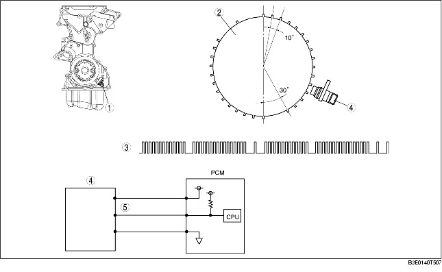

• The CKP sensor is installed on the engine front cover. The CKP sensor is installed at 115° from where the adjacent portion of an empty space meets the crank angle 0° position (top dead center) on the crankshaft position sensor pulse wheel.
• The CKP sensor pulse wheel is divided into 30 projections and 3 empty spaces, and the distance between each projection equals 10° of crank angle.

.
• The CKP sensor is composed of an integrated circuit with a built-in GMR (Giant Magneto Resistance) element and signal processing circuit, and a magnet. With the adoption of the GMR element, the signal amplitude measured against the Hall element is larger, improving signal reliability.
• Signal detection utilizes the GMR characteristic in which electrical resistance changes according to magnetic flux.
• The shape (GMR output) of the magnetic flux detected by the GMR element is changed into a rectangular wave by the signal processing circuit and input to the PCM as a sensor output signal.